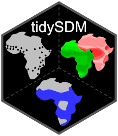
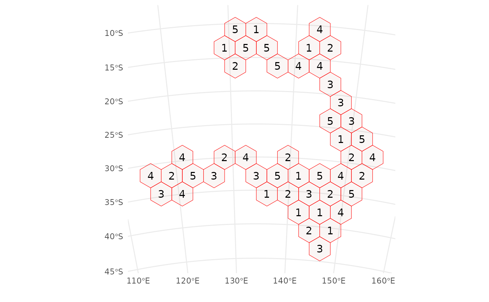

Create an initial train/test split from a blockCV object
Source:R/blockcv2initial_split.R
blockcv2initial_split.RdConverts a blockCV object to an rsample object and randomly selects one
fold as the assessment (test) set, with the remaining folds used as the
analysis (training) set.
Value
An rsplit object that can be used with rsample::training() and
rsample::testing().
Examples
library(blockCV)
#> blockCV 3.2.0
# import presence-absence species data
points <- read.csv(system.file("extdata/", "species.csv",
package = "blockCV"
))
# make an sf object from data.frame
pa_data <- sf::st_as_sf(points, coords = c("x", "y"), crs = 7845)
sb1 <- blockCV::cv_spatial(
x = pa_data, column = "occ",
k = 5, size = 350000
)
#>
|
| | 0%
|
|= | 1%
|
|= | 2%
|
|== | 3%
|
|=== | 4%
|
|==== | 5%
|
|==== | 6%
|
|===== | 7%
|
|====== | 8%
|
|====== | 9%
|
|======= | 10%
|
|======== | 11%
|
|======== | 12%
|
|========= | 13%
|
|========== | 14%
|
|========== | 15%
|
|=========== | 16%
|
|============ | 17%
|
|============= | 18%
|
|============= | 19%
|
|============== | 20%
|
|=============== | 21%
|
|=============== | 22%
|
|================ | 23%
|
|================= | 24%
|
|================== | 25%
|
|================== | 26%
|
|=================== | 27%
|
|==================== | 28%
|
|==================== | 29%
|
|===================== | 30%
|
|====================== | 31%
|
|====================== | 32%
|
|======================= | 33%
|
|======================== | 34%
|
|======================== | 35%
|
|========================= | 36%
|
|========================== | 37%
|
|=========================== | 38%
|
|=========================== | 39%
|
|============================ | 40%
|
|============================= | 41%
|
|============================= | 42%
|
|============================== | 43%
|
|=============================== | 44%
|
|================================ | 45%
|
|================================ | 46%
|
|================================= | 47%
|
|================================== | 48%
|
|================================== | 49%
|
|=================================== | 50%
|
|==================================== | 51%
|
|==================================== | 52%
|
|===================================== | 53%
|
|====================================== | 54%
|
|====================================== | 55%
|
|======================================= | 56%
|
|======================================== | 57%
|
|========================================= | 58%
|
|========================================= | 59%
|
|========================================== | 60%
|
|=========================================== | 61%
|
|=========================================== | 62%
|
|============================================ | 63%
|
|============================================= | 64%
|
|============================================== | 65%
|
|============================================== | 66%
|
|=============================================== | 67%
|
|================================================ | 68%
|
|================================================ | 69%
|
|================================================= | 70%
|
|================================================== | 71%
|
|================================================== | 72%
|
|=================================================== | 73%
|
|==================================================== | 74%
|
|==================================================== | 75%
|
|===================================================== | 76%
|
|====================================================== | 77%
|
|======================================================= | 78%
|
|======================================================= | 79%
|
|======================================================== | 80%
|
|========================================================= | 81%
|
|========================================================= | 82%
|
|========================================================== | 83%
|
|=========================================================== | 84%
|
|============================================================ | 85%
|
|============================================================ | 86%
|
|============================================================= | 87%
|
|============================================================== | 88%
|
|============================================================== | 89%
|
|=============================================================== | 90%
|
|================================================================ | 91%
|
|================================================================ | 92%
|
|================================================================= | 93%
|
|================================================================== | 94%
|
|================================================================== | 95%
|
|=================================================================== | 96%
|
|==================================================================== | 97%
|
|===================================================================== | 98%
|
|===================================================================== | 99%
|
|======================================================================| 100%
#> train_0 train_1 test_0 test_1
#> 1 203 201 54 42
#> 2 209 190 48 53
#> 3 193 205 64 38
#> 4 205 171 52 72
#> 5 218 205 39 38

split <- blockcv2initial_split(sb1, pa_data)
training(split)
#> Simple feature collection with 398 features and 1 field
#> Geometry type: POINT
#> Dimension: XY
#> Bounding box: xmin: -1733041 ymin: -4757372 xmax: 1887137 ymax: -1342594
#> Projected CRS: GDA2020 / GA LCC
#> First 10 features:
#> occ geometry
#> 1 0 POINT (-1733041 -3644787)
#> 2 0 POINT (-1698808 -3670463)
#> 3 0 POINT (-1621782 -3807396)
#> 4 1 POINT (-1707366 -3807396)
#> 5 0 POINT (-1570432 -3764604)
#> 6 0 POINT (-1690249 -3670463)
#> 7 0 POINT (-1698808 -3773163)
#> 8 0 POINT (-1407824 -3815954)
#> 9 0 POINT (-1279449 -3764604)
#> 10 0 POINT (-1365032 -3961446)
testing(split)
#> Simple feature collection with 102 features and 1 field
#> Geometry type: POINT
#> Dimension: XY
#> Bounding box: xmin: -1741599 ymin: -4911422 xmax: 1698854 ymax: -2010144
#> Projected CRS: GDA2020 / GA LCC
#> First 10 features:
#> occ geometry
#> 1 1 POINT (-1681691 -3884421)
#> 2 1 POINT (-1733041 -3918654)
#> 3 1 POINT (-1707366 -3918654)
#> 4 1 POINT (-1467732 -4021354)
#> 5 0 POINT (-1467732 -4012796)
#> 6 0 POINT (-1561874 -3833071)
#> 7 1 POINT (-1733041 -3952888)
#> 8 0 POINT (-1587549 -3875863)
#> 9 0 POINT (-1493407 -4004238)
#> 10 1 POINT (-1442057 -4012796)